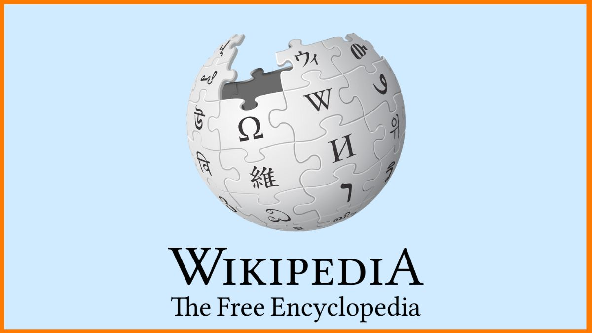

History of Wikipedia
 Various collaborative online encyclopedias were attempted before the start of Wikipedia, but with limited success.[21] Wikipedia began as a complementary project for Nupedia, a free online English-language encyclopedia project whose articles were written by experts and reviewed under a formal process.[22] It was founded on March 9, 2000, under the ownership of Bomis, a web portal company. Its main figures were Bomis CEO Jimmy Wales and Larry Sanger, editor-in-chief for Nupedia and later Wikipedia.[1][23] Nupedia was initially licensed under its own Nupedia Open Content License, but before Wikipedia was founded, Nupedia switched to the GNU Free Documentation License at the urging of Richard Stallman.[24] Wales is credited with defining the goal of making a publicly editable encyclopedia,[25][26] while Sanger is credited with the strategy of using a wiki to reach that goal.[27] On January 10, 2001, Sanger proposed on the Nupedia mailing list to create a wiki as a "feeder" project for Nupedia.[28] Various collaborative online encyclopedias were attempted before the start of Wikipedia, but with limited success.[21] Wikipedia began as a complementary project for Nupedia, a free online English-language encyclopedia project whose articles were written by experts and reviewed under a formal process.[22] It was founded on March 9, 2000, under the ownership of Bomis, a web portal company. Its main figures were Bomis CEO Jimmy Wales and Larry Sanger, editor-in-chief for Nupedia and later Wikipedia.[1][23] Nupedia was initially licensed under its own Nupedia Open Content License, but before Wikipedia was founded, Nupedia switched to the GNU Free Documentation License at the urging of Richard Stallman.[24] Wales is credited with defining the goal of making a publicly editable encyclopedia,[25][26] while Sanger is credited with the strategy of using a wiki to reach that goal.[27] On January 10, 2001, Sanger proposed on the Nupedia mailing list to create a wiki as a "feeder" project for Nupedia.[28]
Milestones
![]() In January 2007, Wikipedia first became one of the ten most popular websites in the United States, according to Comscore Networks.[60] With 42.9 million unique visitors, it was ranked #9, surpassing The New York Times (#10) and Apple (#11).[60] This marked a significant increase over January 2006, when Wikipedia ranked 33rd, with around 18.3 million unique visitors.[61] In 2014, it received eight billion page views every month.[62] On February 9, 2014, The New York Times reported that Wikipedia had 18 billion page views and nearly 500 million unique visitors a month, "according to the ratings firm comScore".[6] As of March 2023, it ranked 6th in popularity, according to Similarweb.[63] Loveland and Reagle argue that, in process, Wikipedia follows a long tradition of historical encyclopedias that have accumulated improvements piecemeal through "stigmergic accumulation".[64][65]
On January 18, 2012, the English Wikipedia participated in a series of coordinated protests against two proposed laws in the United States Congress—the Stop Online Piracy Act (SOPA) and the PROTECT IP Act (PIPA)—by blacking out its pages for 24 hours.[66] More than 162 million people viewed the blackout explanation page that temporarily replaced its content.[67][68]
On January 20, 2014, Subodh Varma reporting for The Economic Times indicated that not only had Wikipedia's growth stalled, it "had lost nearly ten percent of its page views last year. There was a decline of about two billion between December 2012 and December 2013. Its most popular versions are leading the slide: page-views of the English Wikipedia declined by twelve percent, those of German version slid by 17 percent and the Japanese version lost nine percent."[69] Varma added, "While Wikipedia's managers think that this could be due to errors in counting, other experts feel that Google's Knowledge Graphs project launched last year may be gobbling up Wikipedia users."[69] When contacted on this matter, Clay Shirky, associate professor at New York University and fellow at Harvard's Berkman Klein Center for Internet & Society said that he suspected much of the page-view decline was due to Knowledge Graphs, stating, "If you can get your question answered from the search page, you don't need to click [any further]."[69] By the end of December 2016, Wikipedia was ranked the fifth most popular website globally.[70]
In January 2007, Wikipedia first became one of the ten most popular websites in the United States, according to Comscore Networks.[60] With 42.9 million unique visitors, it was ranked #9, surpassing The New York Times (#10) and Apple (#11).[60] This marked a significant increase over January 2006, when Wikipedia ranked 33rd, with around 18.3 million unique visitors.[61] In 2014, it received eight billion page views every month.[62] On February 9, 2014, The New York Times reported that Wikipedia had 18 billion page views and nearly 500 million unique visitors a month, "according to the ratings firm comScore".[6] As of March 2023, it ranked 6th in popularity, according to Similarweb.[63] Loveland and Reagle argue that, in process, Wikipedia follows a long tradition of historical encyclopedias that have accumulated improvements piecemeal through "stigmergic accumulation".[64][65]
On January 18, 2012, the English Wikipedia participated in a series of coordinated protests against two proposed laws in the United States Congress—the Stop Online Piracy Act (SOPA) and the PROTECT IP Act (PIPA)—by blacking out its pages for 24 hours.[66] More than 162 million people viewed the blackout explanation page that temporarily replaced its content.[67][68]
On January 20, 2014, Subodh Varma reporting for The Economic Times indicated that not only had Wikipedia's growth stalled, it "had lost nearly ten percent of its page views last year. There was a decline of about two billion between December 2012 and December 2013. Its most popular versions are leading the slide: page-views of the English Wikipedia declined by twelve percent, those of German version slid by 17 percent and the Japanese version lost nine percent."[69] Varma added, "While Wikipedia's managers think that this could be due to errors in counting, other experts feel that Google's Knowledge Graphs project launched last year may be gobbling up Wikipedia users."[69] When contacted on this matter, Clay Shirky, associate professor at New York University and fellow at Harvard's Berkman Klein Center for Internet & Society said that he suspected much of the page-view decline was due to Knowledge Graphs, stating, "If you can get your question answered from the search page, you don't need to click [any further]."[69] By the end of December 2016, Wikipedia was ranked the fifth most popular website globally.[70]
Restrictions
 Due to Wikipedia's increasing popularity, some editions, including the English version, have introduced editing restrictions for certain cases. For instance, on the English Wikipedia and some other language editions, only registered users may create a new article.[84] On the English Wikipedia, among others, particularly controversial, sensitive, or vandalism-prone pages have been protected to varying degrees.[85][86] A frequently vandalized article can be "semi-protected" or "extended confirmed protected", meaning that only "autoconfirmed" or "extended confirmed" editors can modify it.[87] A particularly contentious article may be locked so that only administrators can make changes.[88] A 2021 article in the Columbia Journalism Review identified Wikipedia's page-protection policies as "perhaps the most important" means at its disposal to "regulate its market of ideas".[89]
In certain cases, all editors are allowed to submit modifications, but review is required for some editors, depending on certain conditions. For example, the German Wikipedia maintains "stable versions" of articles which have passed certain reviews.[90] Following protracted trials and community discussion, the English Wikipedia introduced the "pending changes" system in December 2012.[91] Under this system, new and unregistered users' edits to certain controversial or vandalism-prone articles are reviewed by established users before they are published.[92]
Due to Wikipedia's increasing popularity, some editions, including the English version, have introduced editing restrictions for certain cases. For instance, on the English Wikipedia and some other language editions, only registered users may create a new article.[84] On the English Wikipedia, among others, particularly controversial, sensitive, or vandalism-prone pages have been protected to varying degrees.[85][86] A frequently vandalized article can be "semi-protected" or "extended confirmed protected", meaning that only "autoconfirmed" or "extended confirmed" editors can modify it.[87] A particularly contentious article may be locked so that only administrators can make changes.[88] A 2021 article in the Columbia Journalism Review identified Wikipedia's page-protection policies as "perhaps the most important" means at its disposal to "regulate its market of ideas".[89]
In certain cases, all editors are allowed to submit modifications, but review is required for some editors, depending on certain conditions. For example, the German Wikipedia maintains "stable versions" of articles which have passed certain reviews.[90] Following protracted trials and community discussion, the English Wikipedia introduced the "pending changes" system in December 2012.[91] Under this system, new and unregistered users' edits to certain controversial or vandalism-prone articles are reviewed by established users before they are published.[92]
Vandalism
Any change or edit that manipulates content in a way that deliberately compromises Wikipedia's integrity is considered vandalism. The most common and obvious types of vandalism include additions of obscenities and crude humor; it can also include advertising and other types of spam.[97] Sometimes editors commit vandalism by removing content or entirely blanking a given page. Less common types of vandalism, such as the deliberate addition of plausible but false information, can be more difficult to detect. Vandals can introduce irrelevant formatting, modify page semantics such as the page's title or categorization, manipulate the article's underlying code, or use images disruptively.[98] White-haired elderly gentleman in suit and tie speaks at a podium. American journalist John Seigenthaler (1927–2014), subject of the Seigenthaler incident Obvious vandalism is generally easy to remove from Wikipedia articles; the median time to detect and fix it is a few minutes.[99][100] However, some vandalism takes much longer to detect and repair.[101] In the Seigenthaler biography incident, an anonymous editor introduced false information into the biography of American political figure John Seigenthaler in May 2005, falsely presenting him as a suspect in the assassination of John F. Kennedy.[101] It remained uncorrected for four months.[101] Seigenthaler, the founding editorial director of USA Today and founder of the Freedom Forum First Amendment Center at Vanderbilt University, called Wikipedia co-founder Jimmy Wales and asked whether he had any way of knowing who contributed the misinformation. Wales said he did not, although the perpetrator was eventually traced.[102][103] After the incident, Seigenthaler described Wikipedia as "a flawed and irresponsible research tool".[101] The incident led to policy changes at Wikipedia for tightening up the verifiability of biographical articles of living people.[104] In 2010, Daniel Tosh encouraged viewers of his show, Tosh.0, to visit the show's Wikipedia article and edit it at will. On a later episode, he commented on the edits to the article, most of them offensive, which had been made by the audience and had prompted the article to be locked from editing.[105][106]
Community
Each article and each user of Wikipedia has an associated and dedicated "talk" page. These form the primary communication channel for editors to discuss, coordinate and debate.[140]
Wikipedians and British Museum curators collaborate on the article Hoxne Hoard in June 2010
Wikipedia's community has been described as cultlike,[141] although not always with entirely negative connotations.[142] Its preference for cohesiveness, even if it requires compromise that includes disregard of credentials, has been referred to as "anti-elitism".[143]
Wikipedia does not require that its editors and contributors provide identification.[144] As Wikipedia grew, "Who writes Wikipedia?" became one of the questions frequently asked there.[145] Jimmy Wales once argued that only "a community ... a dedicated group of a few hundred volunteers" makes the bulk of contributions to Wikipedia and that the project is therefore "much like any traditional organization".[146] In 2008, a Slate magazine article reported that: "According to researchers in Palo Alto, one percent of Wikipedia users are responsible for about half of the site's edits."[147] This method of evaluating contributions was later disputed by Aaron Swartz, who noted that several articles he sampled had large portions of their content (measured by number of characters) contributed by users with low edit counts.[148]
The English Wikipedia has 6,635,130 articles, 45,260,145 registered editors, and 129,868 active editors. An editor is considered active if they have made one or more edits in the past 30 days.[149]
Editors who fail to comply with Wikipedia cultural rituals, such as signing talk page comments, may implicitly signal that they are Wikipedia outsiders, increasing the odds that Wikipedia insiders may target or discount their contributions. Becoming a Wikipedia insider involves non-trivial costs: the contributor is expected to learn Wikipedia-specific technological codes, submit to a sometimes convoluted dispute resolution process, and learn a "baffling culture rich with in-jokes and insider references".[150] Editors who do not log in are in some sense “second-class citizens” on Wikipedia,[150] as "participants are accredited by members of the wiki community, who have a vested interest in preserving the quality of the work product, on the basis of their ongoing participation",[151] but the contribution histories of anonymous unregistered editors recognized only by their IP addresses cannot be attributed to a particular editor with certainty.[151]
Readership
In February 2014, The New York Times reported that Wikipedia was ranked fifth globally among all websites, stating "With 18 billion page views and nearly 500 million unique visitors a month, ... Wikipedia trails just Yahoo, Facebook, Microsoft and Google, the largest with 1.2 billion unique visitors."[6] However, its ranking dropped to 13th globally by June 2020 due mostly to a rise in popularity of Chinese websites for online shopping.[378] In addition to logistic growth in the number of its articles,[379] Wikipedia has steadily gained status as a general reference website since its inception in 2001.[380] The number of readers of Wikipedia worldwide reached 365 million at the end of 2009.[381] The Pew Internet and American Life project found that one third of US Internet users consulted Wikipedia.[382] In 2011, Business Insider gave Wikipedia a valuation of $4 billion if it ran advertisements.[383] According to "Wikipedia Readership Survey 2011", the average age of Wikipedia readers is 36, with a rough parity between genders. Almost half of Wikipedia readers visit the site more than five times a month, and a similar number of readers specifically look for Wikipedia in search engine results. About 47 percent of Wikipedia readers do not realize that Wikipedia is a non-profit organization.[384] As of February 2023, Wikipedia attracts around 2 billion unique devices monthly, with the English Wikipedia receiving 10 billion pageviews each month.[7]
Cultural significance
Wikipedia's content has also been used in academic studies, books, conferences, and court cases.[392][393][394] The Parliament of Canada's website refers to Wikipedia's article on same-sex marriage in the "related links" section of its "further reading" list for the Civil Marriage Act.[395] The encyclopedia's assertions are increasingly used as a source by organizations such as the US federal courts and the World Intellectual Property Organization[396]—though mainly for supporting information rather than information decisive to a case.[397] Content appearing on Wikipedia has also been cited as a source and referenced in some US intelligence agency reports.[398] In December 2008, the scientific journal RNA Biology launched a new section for descriptions of families of RNA molecules and requires authors who contribute to the section to also submit a draft article on the RNA family for publication in Wikipedia.[399] Wikipedia has also been used as a source in journalism,[400][401] often without attribution, and several reporters have been dismissed for plagiarizing from Wikipedia.[402][403][404][405] In 2006, Time magazine recognized Wikipedia's participation (along with YouTube, Reddit, MySpace, and Facebook) in the rapid growth of online collaboration and interaction by millions of people worldwide.[406] On September 16, 2007, The Washington Post reported that Wikipedia had become a focal point in the 2008 US election campaign, saying: "Type a candidate's name into Google, and among the first results is a Wikipedia page, making those entries arguably as important as any ad in defining a candidate. Already, the presidential entries are being edited, dissected and debated countless times each day."[407] An October 2007 Reuters article, titled "Wikipedia page the latest status symbol", reported the recent phenomenon of how having a Wikipedia article vindicates one's notability.[408] One of the first times Wikipedia was involved in a governmental affair was on September 28, 2007, when Italian politician Franco Grillini raised a parliamentary question with the minister of cultural resources and activities about the necessity of freedom of panorama. He said that the lack of such freedom forced Wikipedia, "the seventh most consulted website", to forbid all images of modern Italian buildings and art, and claimed this was hugely damaging to tourist revenues.[409]